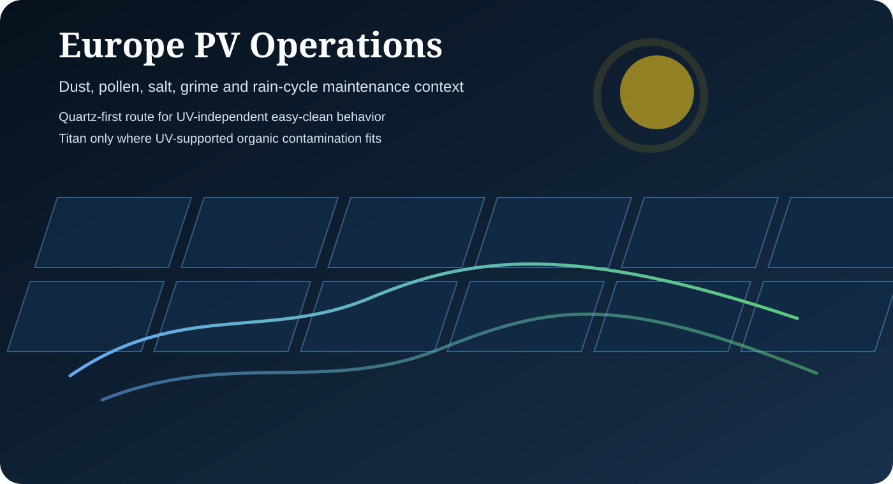

Dust, pollen and grime
Use Quartz for passive SiO₂ surface-energy control and easier recovery of PV glass condition between cleaning events.
Europe is a region-level landing page for dust, pollen, salt, grime and rainfall-driven maintenance contexts. The route should be Quartz-first, with Titan considered selectively where UV-supported organic or atmospheric fouling is technically relevant.

Use Quartz for passive SiO₂ surface-energy control and easier recovery of PV glass condition between cleaning events.
Coastal assets should be evaluated by salt exposure, rinse behavior, cleaning method, access conditions and abrasion sensitivity.
Material decisions should connect source scenarios to local irradiance, energy value, soiling profile and maintenance records.
Quartz is the stronger first-pass route for European assets where UV independence, reduced adhesion, easier cleaning and rain-assisted surface recovery are central to the operating case.
Titan should be routed through a specific UV and contamination review. It should not be positioned as a generic European replacement for Quartz.